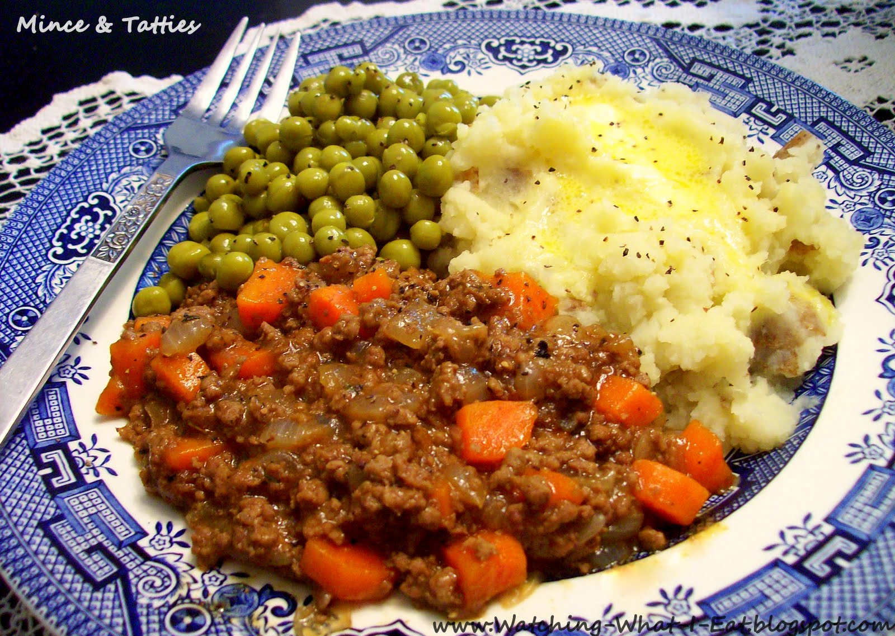

Mince and Tatties, a Scotsman's Favourite

The favourite dish of every self-respecting Scotsman
This is just the very thing for a winter's day, or a summer's day, or even when the wife has left you.
If you come from Scotland, are male, and don't like this? Then there is something badly wrong with you.
Ingredients
- Half a pound of Mince
- Many Potatoes
- 1 Onion
- 2 Carrots
- Beef Stock
Method
- For God's sake man, you're Scottish!
- You should have learned this at your mammy's knee!
- This is something that cannot be learned from a recipe.
- If you don't know now, then you never will. Your only chance at a meal lies here, you poor benighted soul.
Return to Home Page